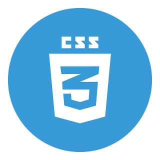
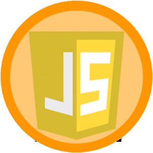

HTML5
HTML5 Hypertext Markup Language, versão 5,
é uma linguagem de marcação para a World
Wide Web e é uma tecnologia chave da Internet,
originalmente proposto por Opera Software.
É a quinta versão da linguagem HTML.
Esta nova versão traz consigo importantes
mudanças quanto ao papel do HTML no mundo da Web,
através de novas funcionalidades como semântica e
acessibilidade. Possibilita o uso de novos
recursos antes possíveis apenas com a aplicação
de outras tecnologias. Sua essência tem sido
melhorar a linguagem com o suporte para as
mais recentes multimídias, enquanto a mantém
facilmente legível por seres humanos e
consistentemente compreendida por computadores
e outros dispositivos.
CSS3

CSS3 é a terceira mais nova versão das famosas
Cascading Style Sheets, pela qual se define
estilos para um projeto web. Com efeitos de
transição, imagem, imagem de fundo/background
e outros, pode-se criar estilos únicos para
seus projetos web, alterando diversos aspectos
de design no layout da página. A principal função
do CSS3 é abolir as imagens de plano/Background de
fundo, bordas arredondadas, apresentar transições
e efeitos para criar animações de vários tipos,
como um simples relógio de ponteiros. Isso se
deve aos novos browsers/navegadores que estão
chegando com suporte à essa linguagem, como o
Google Chrome, Opera, Internet Explorer 9,
Safari e Mozilla Firefox. Assim, o CSS3
facilitará o trabalho dos profissionais de
front-end e também a utilização de sites
pelos usuários.
JavaScript

JavaScript é uma linguagem de programação interpretada
estruturada, de script em alto nível com tipagem dinâmica
fraca e multiparadigma. Juntamente com HTML e
CSS, o JavaScript é uma das três principais tecnologias
da World Wide Web. JavaScript permite páginas da Web
interativas e, portanto, é uma parte essencial dos
aplicativos da web. A grande maioria dos sites usa,
e todos os principais navegadores têm um mecanismo
JavaScript dedicado para executá-lo. É atualmente
a principal linguagem para programação client-side
em navegadores web. É também bastante utilizada
do lado do servidor através de ambientes como o node.js.